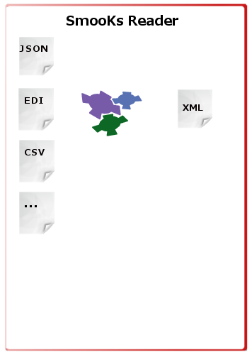
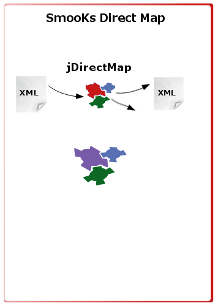
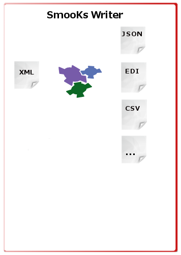

The SmooKs Direct Mapping project aims to enhance SmooKs framework to transform any source to any destination. Direct reader to writer mapping without additional object transformation.
  The SmooKs Direct Mapping Project
Project Content
1 Description
2 Visual Design
3 Functional Specifications/Requirements
4 Markup & Style
5 Latest version of plug-in
6 Open issues being discussed
type: widget
release: 0.9
status: in progress
documentation: http://directmapping.appspot.com/jdirectmap/jdm_resources.html
demo: http://directmapping.appspot.com/jdirectmap/jdm_demo.html
1 - Description:
The jQuery Direct Map or jDirectMap is a project to enable users to relate two different structural data sets. To support clear design and optimize performance for hierarchical structure, combination of spindown with tree control is used to selectively hide and show information or nodes. The simplest form is a spin down or disclosure triangle which is used to hide or show a single block of information. A set of these stacked together is referred to as a tree control. More information on UI guidelines:
Currently the jQuery UI Tree plug-in is in development, but not yet documented (as it's not part of a jQuery UI release). is a tree page on the UI documentation wiki page with more details about the project:
As part of this project a wide research on currently available jQuery tree plug-ins was conducted. Results (full report to be published shortly) shown that there are fairly robust plugins with lots of features to consider:
As part of the project all of these major plug-ins will be considered and implemented in demo. The plan is to implement basic versions extending each of these tree plugins and leave the selection process to the user. Certain minimal requirements and functional specification with precondition need to be defined and followed in each version.
Source
The input element to define the data structure and visualize content of the source object.
Tree structure is currently most common way how to show large content and enable to selection and extended inspection of the data. Collapsing or extending tree is enables user to easy navigate through the structure.
As the project is aim to be cloud ready a web based technologies are used for the user interface. In the first demo jQuery as the leading java script library is researched.
Following tree plug-ins passed the selection process and are used for the initial phase demo
As input following format are planned to be accepted :
- XML
- JSON
Please see the demo page for current implementations.
Map
The element to enable create and persist relation between source and destination. Various objects with different object structure have common information. In order to enable to link those an mapping object is designed to enable user easy and quickly understand the common parts. There are two main components of this element.
Map showing from to relation
Function map enabling do define specific transformation
Map requires basic CRUD (create-read-update-delete) functionality.
Please see the demo page for current implementations.
Destination
The input element to define the data structure and visualise content of the destination object.
Tree structure is currently most common way how to show large content and enable to selection and extended inspection of the data. Collapsing or extending tree is enables user to easy navigate trhough the structure.
As the project is aim to be cloud ready a web based technologies are used for the user interface. In the first demo jQuery as the leading java script library is researched.
Following tree plugins passed the selection process and are used for the intial phase demo
As input following format are planned to be accepted :
- XML
- JSON
Please see the demo page for current implementations.